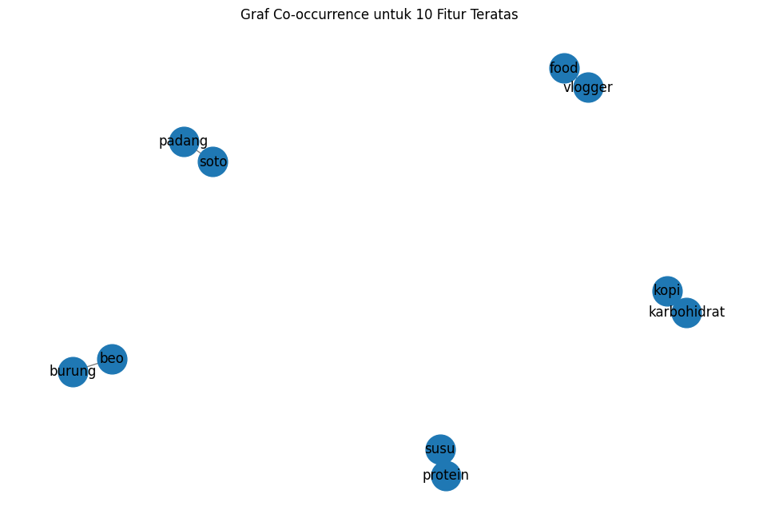
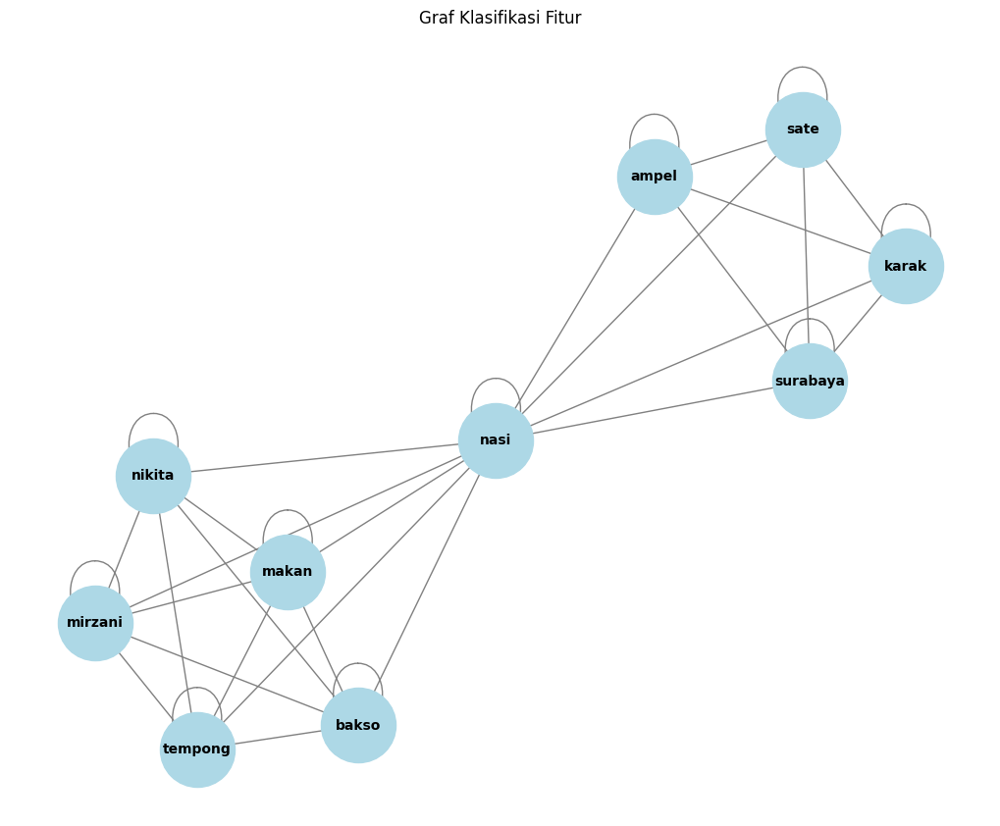

from google.colab import drive
drive.mount('/content/drive')
Drive already mounted at /content/drive; to attempt to forcibly remount, call drive.mount("/content/drive", force_remount=True).
import pandas as pd
df = pd.read_csv("/content/drive/My Drive/PPW/report/tugas_ppw/hasil_prepros.csv")
df.head(5)
| judul | tanggal | isi | kategori | cleansing | case_folding | tokenize | stopword_removal | |
|---|---|---|---|---|---|---|---|---|
| 0 | Momen Nabilla Aprillya saat Nikmati Steak dan ... | Rabu, 16 Okt 2024 22:00 WIB | Jakarta - Nabilla Aprillya, selebgram yang dii... | Makanan | Jakarta Nabilla Aprillya selebgram yang diisu... | jakarta nabilla aprillya selebgram yang diisu... | ['jakarta', 'nabilla', 'aprillya', 'selebgram'... | jakarta nabilla aprillya selebgram diisukan is... |
| 1 | Veronica Tan Jadi Calon Menteri Prabowo, Terny... | Rabu, 16 Okt 2024 21:00 WIB | Jakarta - Veronica Tan mencuri perhatian setel... | Makanan | Jakarta Veronica Tan mencuri perhatian setela... | jakarta veronica tan mencuri perhatian setela... | ['jakarta', 'veronica', 'tan', 'mencuri', 'per... | jakarta veronica tan mencuri perhatian mengunj... |
| 2 | Karyawan Curi Kue Milik Rekannya dan Ternyata ... | Rabu, 16 Okt 2024 19:30 WIB | Jakarta - Mencuri kue milik rekan kerjanya dar... | Makanan | Jakarta Mencuri kue milik rekan kerjanya dari... | jakarta mencuri kue milik rekan kerjanya dari... | ['jakarta', 'mencuri', 'kue', 'milik', 'rekan'... | jakarta mencuri kue milik rekan kerjanya kulka... |
| 3 | 5 Kisah Eks Pramugari Sukses Jualan Lontong Sa... | Rabu, 16 Okt 2024 19:00 WIB | Jakarta - Sebagian orang menilai profesi sebag... | Makanan | Jakarta Sebagian orang menilai profesi sebaga... | jakarta sebagian orang menilai profesi sebaga... | ['jakarta', 'sebagian', 'orang', 'menilai', 'p... | jakarta orang menilai profesi pramugari keren ... |
| 4 | Wow! Nasi Lemak Lauk Seafood Ini Harganya Rp 1... | Rabu, 16 Okt 2024 18:30 WIB | Jakarta - Nasi lemak di Malaysia harganya mema... | Makanan | Jakarta Nasi lemak di Malaysia harganya meman... | jakarta nasi lemak di malaysia harganya meman... | ['jakarta', 'nasi', 'lemak', 'di', 'malaysia',... | jakarta nasi lemak malaysia harganya variatif ... |
#mengubah data text ke numerik
from sklearn.preprocessing import LabelEncoder
# Transformasi data kategorik
label_encoder = LabelEncoder()
df.loc[:, 'kategori_encoded'] = label_encoder.fit_transform(df['kategori'])
# Menampilkan nilai sebelum dan sesudah konversi
print("\nNilai sebelum dan sesudah konversi:")
print(dict(zip(label_encoder.classes_, label_encoder.transform(label_encoder.classes_))))
print("\nDataFrame setelah Label Encoding:")
print(df)
Nilai sebelum dan sesudah konversi:
{'Makanan': 0, 'Travel': 1}
DataFrame setelah Label Encoding:
judul \
0 Momen Nabilla Aprillya saat Nikmati Steak dan ...
1 Veronica Tan Jadi Calon Menteri Prabowo, Terny...
2 Karyawan Curi Kue Milik Rekannya dan Ternyata ...
3 5 Kisah Eks Pramugari Sukses Jualan Lontong Sa...
4 Wow! Nasi Lemak Lauk Seafood Ini Harganya Rp 1...
.. ...
95 Hari ke-6 Pendaki Jakarta Hilang di Gunung Wil...
96 5 Kerangka Manusia di Istana Bhre Wengker Belu...
97 Kesalnya Pemilik Bar Dituduh Tak Kembalikan Ua...
98 Menikmati Senja di Danau Wilcox Toronto
99 Optimisme SDM Parekraf Lebih Berkualitas di Ma...
tanggal \
0 Rabu, 16 Okt 2024 22:00 WIB
1 Rabu, 16 Okt 2024 21:00 WIB
2 Rabu, 16 Okt 2024 19:30 WIB
3 Rabu, 16 Okt 2024 19:00 WIB
4 Rabu, 16 Okt 2024 18:30 WIB
.. ...
95 Selasa, 15 Okt 2024 20:35 WIB
96 Selasa, 15 Okt 2024 20:05 WIB
97 Selasa, 15 Okt 2024 19:35 WIB
98 Selasa, 15 Okt 2024 19:30 WIB
99 Selasa, 15 Okt 2024 19:05 WIB
isi kategori \
0 Jakarta - Nabilla Aprillya, selebgram yang dii... Makanan
1 Jakarta - Veronica Tan mencuri perhatian setel... Makanan
2 Jakarta - Mencuri kue milik rekan kerjanya dar... Makanan
3 Jakarta - Sebagian orang menilai profesi sebag... Makanan
4 Jakarta - Nasi lemak di Malaysia harganya mema... Makanan
.. ... ...
95 Jakarta - Petugas dari BPBD, TNI-Polri masih m... Travel
96 Surabaya - Penemuan 5 kerangka manusia dalam k... Travel
97 Jakarta - Seorang warga asing mengabuk di bar ... Travel
98 Toronto - Menikmati matahari tenggelam tentu m... Travel
99 Jakarta - Menyongsong masa depan pariwisata da... Travel
cleansing \
0 Jakarta Nabilla Aprillya selebgram yang diisu...
1 Jakarta Veronica Tan mencuri perhatian setela...
2 Jakarta Mencuri kue milik rekan kerjanya dari...
3 Jakarta Sebagian orang menilai profesi sebaga...
4 Jakarta Nasi lemak di Malaysia harganya meman...
.. ...
95 Jakarta Petugas dari BPBD TNIPolri masih mela...
96 Surabaya Penemuan kerangka manusia dalam kon...
97 Jakarta Seorang warga asing mengabuk di bar s...
98 Toronto Menikmati matahari tenggelam tentu me...
99 Jakarta Menyongsong masa depan pariwisata dan...
case_folding \
0 jakarta nabilla aprillya selebgram yang diisu...
1 jakarta veronica tan mencuri perhatian setela...
2 jakarta mencuri kue milik rekan kerjanya dari...
3 jakarta sebagian orang menilai profesi sebaga...
4 jakarta nasi lemak di malaysia harganya meman...
.. ...
95 jakarta petugas dari bpbd tnipolri masih mela...
96 surabaya penemuan kerangka manusia dalam kon...
97 jakarta seorang warga asing mengabuk di bar s...
98 toronto menikmati matahari tenggelam tentu me...
99 jakarta menyongsong masa depan pariwisata dan...
tokenize \
0 ['jakarta', 'nabilla', 'aprillya', 'selebgram'...
1 ['jakarta', 'veronica', 'tan', 'mencuri', 'per...
2 ['jakarta', 'mencuri', 'kue', 'milik', 'rekan'...
3 ['jakarta', 'sebagian', 'orang', 'menilai', 'p...
4 ['jakarta', 'nasi', 'lemak', 'di', 'malaysia',...
.. ...
95 ['jakarta', 'petugas', 'dari', 'bpbd', 'tnipol...
96 ['surabaya', 'penemuan', 'kerangka', 'manusia'...
97 ['jakarta', 'seorang', 'warga', 'asing', 'meng...
98 ['toronto', 'menikmati', 'matahari', 'tenggela...
99 ['jakarta', 'menyongsong', 'masa', 'depan', 'p...
stopword_removal kategori_encoded
0 jakarta nabilla aprillya selebgram diisukan is... 0
1 jakarta veronica tan mencuri perhatian mengunj... 0
2 jakarta mencuri kue milik rekan kerjanya kulka... 0
3 jakarta orang menilai profesi pramugari keren ... 0
4 jakarta nasi lemak malaysia harganya variatif ... 0
.. ... ...
95 jakarta petugas bpbd tnipolri pencarian hilang... 1
96 surabaya penemuan kerangka manusia kondisi ter... 1
97 jakarta warga asing mengabuk bar uang kembalia... 1
98 toronto menikmati matahari tenggelam favorit k... 1
99 jakarta menyongsong pariwisata ekonomi kreatif... 1
[100 rows x 9 columns]
# Menyimpan DataFrame ke file CSV
df.to_csv('teks sudah bersih.csv', index=False)
Split Data#
#membagi data train&test
from sklearn.model_selection import train_test_split
# Split data
x = df['stopword_removal'] #fitur (input)
y = df['kategori_encoded'] #target (output)
print(x)
print(y)
x_train, x_test, y_train, y_test = train_test_split(x, y, test_size=0.2, random_state=12)
print("="*50)
print("Jumlah data latih:", len(x_train))
print("Jumlah data uji:", len(x_test))
0 jakarta nabilla aprillya selebgram diisukan is...
1 jakarta veronica tan mencuri perhatian mengunj...
2 jakarta mencuri kue milik rekan kerjanya kulka...
3 jakarta orang menilai profesi pramugari keren ...
4 jakarta nasi lemak malaysia harganya variatif ...
...
95 jakarta petugas bpbd tnipolri pencarian hilang...
96 surabaya penemuan kerangka manusia kondisi ter...
97 jakarta warga asing mengabuk bar uang kembalia...
98 toronto menikmati matahari tenggelam favorit k...
99 jakarta menyongsong pariwisata ekonomi kreatif...
Name: stopword_removal, Length: 100, dtype: object
0 0
1 0
2 0
3 0
4 0
..
95 1
96 1
97 1
98 1
99 1
Name: kategori_encoded, Length: 100, dtype: int64
==================================================
Jumlah data latih: 80
Jumlah data uji: 20
TF-IDF Weighting#
import numpy as np
import pandas as pd
import networkx as nx
from sklearn.feature_extraction.text import TfidfVectorizer
# Inisialisasi TF-IDF Vectorizer
tfidf = TfidfVectorizer()
# Fit dan transform pada data training
x_train_tfidf = tfidf.fit_transform(x_train)
# Mendapatkan nama fitur dari TF-IDF
feature_names = tfidf.get_feature_names_out()
# Konversi TF-IDF hasil training ke DataFrame
df_train_tfidf = pd.DataFrame(x_train_tfidf.toarray(), columns=feature_names)
df_train_tfidf
| abad | abang | abdul | abdullah | ac | acar | acara | access | activation | acuannya | ... | yudhistira | yuk | yusuf | zacky | zainuddin | zalianty | zaman | zat | zdenek | zona | |
|---|---|---|---|---|---|---|---|---|---|---|---|---|---|---|---|---|---|---|---|---|---|
| 0 | 0.000000 | 0.0 | 0.0 | 0.0 | 0.0 | 0.0 | 0.0 | 0.0 | 0.0 | 0.0 | ... | 0.0 | 0.0 | 0.0 | 0.0 | 0.0 | 0.0 | 0.0 | 0.00000 | 0.0 | 0.000000 |
| 1 | 0.045537 | 0.0 | 0.0 | 0.0 | 0.0 | 0.0 | 0.0 | 0.0 | 0.0 | 0.0 | ... | 0.0 | 0.0 | 0.0 | 0.0 | 0.0 | 0.0 | 0.0 | 0.00000 | 0.0 | 0.000000 |
| 2 | 0.000000 | 0.0 | 0.0 | 0.0 | 0.0 | 0.0 | 0.0 | 0.0 | 0.0 | 0.0 | ... | 0.0 | 0.0 | 0.0 | 0.0 | 0.0 | 0.0 | 0.0 | 0.00000 | 0.0 | 0.000000 |
| 3 | 0.000000 | 0.0 | 0.0 | 0.0 | 0.0 | 0.0 | 0.0 | 0.0 | 0.0 | 0.0 | ... | 0.0 | 0.0 | 0.0 | 0.0 | 0.0 | 0.0 | 0.0 | 0.00000 | 0.0 | 0.000000 |
| 4 | 0.000000 | 0.0 | 0.0 | 0.0 | 0.0 | 0.0 | 0.0 | 0.0 | 0.0 | 0.0 | ... | 0.0 | 0.0 | 0.0 | 0.0 | 0.0 | 0.0 | 0.0 | 0.00000 | 0.0 | 0.000000 |
| ... | ... | ... | ... | ... | ... | ... | ... | ... | ... | ... | ... | ... | ... | ... | ... | ... | ... | ... | ... | ... | ... |
| 75 | 0.000000 | 0.0 | 0.0 | 0.0 | 0.0 | 0.0 | 0.0 | 0.0 | 0.0 | 0.0 | ... | 0.0 | 0.0 | 0.0 | 0.0 | 0.0 | 0.0 | 0.0 | 0.00000 | 0.0 | 0.000000 |
| 76 | 0.000000 | 0.0 | 0.0 | 0.0 | 0.0 | 0.0 | 0.0 | 0.0 | 0.0 | 0.0 | ... | 0.0 | 0.0 | 0.0 | 0.0 | 0.0 | 0.0 | 0.0 | 0.00000 | 0.0 | 0.000000 |
| 77 | 0.000000 | 0.0 | 0.0 | 0.0 | 0.0 | 0.0 | 0.0 | 0.0 | 0.0 | 0.0 | ... | 0.0 | 0.0 | 0.0 | 0.0 | 0.0 | 0.0 | 0.0 | 0.00000 | 0.0 | 0.000000 |
| 78 | 0.000000 | 0.0 | 0.0 | 0.0 | 0.0 | 0.0 | 0.0 | 0.0 | 0.0 | 0.0 | ... | 0.0 | 0.0 | 0.0 | 0.0 | 0.0 | 0.0 | 0.0 | 0.07893 | 0.0 | 0.000000 |
| 79 | 0.000000 | 0.0 | 0.0 | 0.0 | 0.0 | 0.0 | 0.0 | 0.0 | 0.0 | 0.0 | ... | 0.0 | 0.0 | 0.0 | 0.0 | 0.0 | 0.0 | 0.0 | 0.00000 | 0.0 | 0.031793 |
80 rows × 4636 columns
# Ubah nilai TF-IDF di bawah 0.5 menjadi 0, dan di atas atau sama dengan 0.5 menjadi 1
df_train_tfidf_binary = df_train_tfidf.apply(lambda col: col.map(lambda x: 1 if x >= 0.5 else 0))
# Menampilkan DataFrame dengan nilai biner
df_train_tfidf_binary
| abad | abang | abdul | abdullah | ac | acar | acara | access | activation | acuannya | ... | yudhistira | yuk | yusuf | zacky | zainuddin | zalianty | zaman | zat | zdenek | zona | |
|---|---|---|---|---|---|---|---|---|---|---|---|---|---|---|---|---|---|---|---|---|---|
| 0 | 0 | 0 | 0 | 0 | 0 | 0 | 0 | 0 | 0 | 0 | ... | 0 | 0 | 0 | 0 | 0 | 0 | 0 | 0 | 0 | 0 |
| 1 | 0 | 0 | 0 | 0 | 0 | 0 | 0 | 0 | 0 | 0 | ... | 0 | 0 | 0 | 0 | 0 | 0 | 0 | 0 | 0 | 0 |
| 2 | 0 | 0 | 0 | 0 | 0 | 0 | 0 | 0 | 0 | 0 | ... | 0 | 0 | 0 | 0 | 0 | 0 | 0 | 0 | 0 | 0 |
| 3 | 0 | 0 | 0 | 0 | 0 | 0 | 0 | 0 | 0 | 0 | ... | 0 | 0 | 0 | 0 | 0 | 0 | 0 | 0 | 0 | 0 |
| 4 | 0 | 0 | 0 | 0 | 0 | 0 | 0 | 0 | 0 | 0 | ... | 0 | 0 | 0 | 0 | 0 | 0 | 0 | 0 | 0 | 0 |
| ... | ... | ... | ... | ... | ... | ... | ... | ... | ... | ... | ... | ... | ... | ... | ... | ... | ... | ... | ... | ... | ... |
| 75 | 0 | 0 | 0 | 0 | 0 | 0 | 0 | 0 | 0 | 0 | ... | 0 | 0 | 0 | 0 | 0 | 0 | 0 | 0 | 0 | 0 |
| 76 | 0 | 0 | 0 | 0 | 0 | 0 | 0 | 0 | 0 | 0 | ... | 0 | 0 | 0 | 0 | 0 | 0 | 0 | 0 | 0 | 0 |
| 77 | 0 | 0 | 0 | 0 | 0 | 0 | 0 | 0 | 0 | 0 | ... | 0 | 0 | 0 | 0 | 0 | 0 | 0 | 0 | 0 | 0 |
| 78 | 0 | 0 | 0 | 0 | 0 | 0 | 0 | 0 | 0 | 0 | ... | 0 | 0 | 0 | 0 | 0 | 0 | 0 | 0 | 0 | 0 |
| 79 | 0 | 0 | 0 | 0 | 0 | 0 | 0 | 0 | 0 | 0 | ... | 0 | 0 | 0 | 0 | 0 | 0 | 0 | 0 | 0 | 0 |
80 rows × 4636 columns
# Membuat graf berdasarkan co-occurrence fitur
G = nx.Graph()
# Menambahkan node ke graf
for feature in df_train_tfidf_binary.columns:
G.add_node(feature)
# Menambahkan edge berdasarkan co-occurrence
for i in range(len(df_train_tfidf_binary)):
features = df_train_tfidf_binary.iloc[i]
active_features = features[features == 1].index.tolist()
for j in range(len(active_features)):
for k in range(j + 1, len(active_features)):
G.add_edge(active_features[j], active_features[k])
# Hitung degree centrality
degree_centrality = nx.degree_centrality(G)
# Konversi hasil degree centrality ke DataFrame untuk lebih mudah dilihat
df_degree_centrality = pd.DataFrame(degree_centrality.items(), columns=['Node', 'Degree Centrality'])
# Mengurutkan DataFrame dari yang terbesar sampai terkecil
df_degree_centrality_sorted = df_degree_centrality.sort_values(by='Degree Centrality', ascending=False)
# Tampilkan hasil degree centrality yang sudah diurutkan
print(df_degree_centrality_sorted)
Node Degree Centrality
638 burung 0.000216
1324 food 0.000216
4015 soto 0.000216
3047 padang 0.000216
2083 kopi 0.000216
... ... ...
1546 ibs 0.000000
1545 ibrahimovic 0.000000
1544 ibra 0.000000
1543 hyu 0.000000
4635 zona 0.000000
[4636 rows x 2 columns]
# Menghapus fitur di bawah top 10 terbaik
top_10_features = df_degree_centrality_sorted.head(10)['Node'].tolist()
filtered_df_train_tfidf_binary = df_train_tfidf_binary[top_10_features]
# Tampilkan hasil DataFrame yang sudah difilter
print("\nDataFrame setelah menghapus fitur di bawah top 10:")
print(filtered_df_train_tfidf_binary)
DataFrame setelah menghapus fitur di bawah top 10:
burung food soto padang kopi beo karbohidrat protein vlogger susu
0 0 0 0 0 0 0 0 0 0 0
1 0 0 0 0 0 0 0 0 0 0
2 0 0 0 0 0 0 0 1 0 1
3 0 0 0 0 0 0 0 0 0 0
4 0 0 0 0 0 0 0 0 0 0
.. ... ... ... ... ... ... ... ... ... ...
75 0 0 0 0 0 0 0 0 0 0
76 0 0 0 0 0 0 0 0 0 0
77 0 0 0 0 0 0 0 0 0 0
78 0 0 0 0 0 0 0 0 0 0
79 0 0 0 0 0 0 0 0 0 0
[80 rows x 10 columns]
import matplotlib.pyplot as plt
# Membuat graf baru hanya untuk fitur teratas
G_top_10 = nx.Graph()
# Menambahkan node teratas ke graf
for feature in top_10_features:
G_top_10.add_node(feature)
# Menambahkan edge berdasarkan co-occurrence dari fitur teratas
for i in range(len(df_train_tfidf_binary)):
features = df_train_tfidf_binary.iloc[i]
active_features = features[features == 1].index.tolist()
active_top_10_features = [f for f in active_features if f in top_10_features]
for j in range(len(active_top_10_features)):
for k in range(j + 1, len(active_top_10_features)):
G_top_10.add_edge(active_top_10_features[j], active_top_10_features[k])
# Mengatur ukuran figure untuk visualisasi graf
plt.figure(figsize=(12, 8))
# Menggambar graf fitur teratas
pos = nx.spring_layout(G_top_10) # Menggunakan layout spring
nx.draw_networkx_nodes(G_top_10, pos, node_size=700) # Menggambar node
nx.draw_networkx_edges(G_top_10, pos, width=1.0, alpha=0.5) # Menggambar edge
nx.draw_networkx_labels(G_top_10, pos, font_size=12, font_family='sans-serif') # Menggambar label
# Menampilkan graf
plt.title('Graf Co-occurrence untuk 10 Fitur Teratas')
plt.axis('off') # Menyembunyikan sumbu
plt.show()

# Menghitung closeness centrality
closeness_centrality = nx.closeness_centrality(G_top_10)
# Menghitung betweenness centrality
betweenness_centrality = nx.betweenness_centrality(G_top_10)
# Konversi hasil centrality ke DataFrame untuk lebih mudah dilihat
df_closeness_centrality = pd.DataFrame(closeness_centrality.items(), columns=['Node', 'Closeness Centrality'])
df_betweenness_centrality = pd.DataFrame(betweenness_centrality.items(), columns=['Node', 'Betweenness Centrality'])
# Menggabungkan semua centrality ke dalam satu DataFrame
df_centrality = pd.merge(df_degree_centrality_sorted, df_closeness_centrality, on='Node')
df_centrality = pd.merge(df_centrality, df_betweenness_centrality, on='Node')
# Menampilkan hasil centrality
print(df_centrality)
Node Degree Centrality Closeness Centrality \
0 burung 0.000216 0.111111
1 food 0.000216 0.111111
2 soto 0.000216 0.111111
3 padang 0.000216 0.111111
4 kopi 0.000216 0.111111
5 beo 0.000216 0.111111
6 karbohidrat 0.000216 0.111111
7 protein 0.000216 0.111111
8 vlogger 0.000216 0.111111
9 susu 0.000216 0.111111
Betweenness Centrality
0 0.0
1 0.0
2 0.0
3 0.0
4 0.0
5 0.0
6 0.0
7 0.0
8 0.0
9 0.0
Ke 2 Mengambil 1 Berita#
# Mengimpor library yang diperlukan
import pandas as pd
# Teks berita yang telah dirapikan
news_text_1 = """surabaya surabaya kuliner legendaris eksis salah satunya sate karak berbahan jeroan sapi dibumbui rempah taburan serundeng nikmat sate karak konon
populer an sate berasal kawasan sunan ampel utara kota surabaya bahan utama sate karak jeroan sapi usus dibumbui rempahrempah disajikan ketan hitam pengganti nasi
bumbunya memiliki keunikan dibandingkan bumbu sate dilengkapi serundeng taburan bubuk kedelai cita pedas sate karak dikenalkan kali masyarakat wilayah ampel proses
memasak sederhana teliti sate karak memiliki khas menggoda selera sate disajikan nasi sambal pelengkap menambah kenikmatan disantap sate karak dinikmati sarapan
bumbu kacang sate nikmat aroma arang asap kuat terbiasa menikmati sate tambahan bumbu kacang unik sedap sate karak asli satusatunya ampel surabaya foto esti
widiyanadetikcom detikers makan merogoh kocek rp mencoba sate karak legendaris makan sate karak ketan menggantinya nasi jenis menu pilihan nasi sate daging
dijual rp ribu porsi pilihan tusuk sate daging tusuk sate jeroan masingmasing harganya rp ribu sate karak dinikmati langsung jalan ampel lonceng no ampel
kecamatan semampir kota surabaya jawa timur warung sate karak buka wib wib pengunjung merasakan kenikmatan ditawarkan wawancara detikjatim terungkap warung sate karak
jalan ampel lonceng dikelola generasi ketiga ellis romlah cucu pendiri sate karak sate karak kali didirikan nenek penjajahan belanda diteruskan sebentar melanjutkannya
satusatunya ampel ellis detikcom selasa sate kerak favoritnya masyarakat keturunan arab tinggal ampel foto esti widiyanadetikcom namanya gitu nasi karak nasi basi yg
dikeringkan ketan item setelannya jodohnya sate menang ketan gitu gitu gitu sate karak langganan kesukaan masyarakat keturunan arab tinggal ampel menjual satusatunya
artikel ditulis sri rahayu peserta magang bersertifikat kampus merdeka detikcom artikel tayang detikjatim judul mencicipi sate karak kuliner legendaris khas ampel surabaya aqradr"""
news_text_2 = """ jakarta nikita mirzani aktif mengunggah konten kuliner youtube kali menyambangi makan bakso enak makan viral direkomendasikan netizen momennya
nikita mirzani sorotan publik terkait penjemputan anaknya lolly hubungan harmonis nikita mirzani pasang badan membawa lolly aman terlepas sosok nikita mirzani
disukai publik kontenkonten kulinernya seru unggahan youtube crazy nikmir real momen anak mencicipi aneka kuliner enak videonya populer ditonton juta kali momen
nikita mirzani makan bakso enak cicip pangsit viral antre bubur ayam gerobakan momen kuliner nikita mirzani ditonton youtube mukbang bakso porsi nikita mirzani
mengunggah momen makan rumah pandemi covid menyuguhkan sepanci bakso berisi porsi mukbang baksonya bakso bakso tetelan wanita pelengkap mie kuning mie putih
sawi hijau lupa sambal saus cabai nggak kecap pantang nikita mirzani mukbang nikita mirzani ditemani teman prianya meracik semangkuk bakso cuka sambal mukbang
bakso rumah videonya sukses ditonton juta kali berita ditulis cicip bakso ncess nabati foto youtube crazy nikmir real penggemar bakso nikita mirzani melewatkan
makan bakso enak mengunggah momennya mampir warung bakso milik artis ncess nabati tegal parang videonya ditonton juta kali nikita mirzani sidak dapur mengecek
kebersihan sajian bakso memuji bakso enak porsi melimpah pedasnya sambal endulll nikita tetelan bakso dilengkapi daging tulang kenikmatan bakso dipuji sahabat
nikita mirzani fitri salhuteru bercucuran keringat makan nasi tempong bali foto youtube crazy nikmir real video kulineran nikita mirzani ditonton makan nasi
tempong bali diunggah juni videonya disaksikan juta kali mampir nasi tempong indra beralamat jl dewi sri no legian nikita mirzani pesan nasi tempong lauk
ikan gurame ati langsung mencocol lauk sambal tempong terkenal pedas nonjok nikita mirzani sambal pedasnya mainmain bilang efek pedasnya otak ibunda lolly
merekomendasikan followersnya cicip nasi tempong bali selengkapnya halaman halaman
"""
# Mengubah teks menjadi DataFrame
data = pd.DataFrame([news_text_1, news_text_2], columns=['text'])
# Menampilkan DataFrame
print(data)
text
0 surabaya surabaya kuliner legendaris eksis sal...
1 jakarta nikita mirzani aktif mengunggah konte...
# Mengimpor library yang diperlukan
from sklearn.feature_extraction.text import TfidfVectorizer
# Menghitung TF-IDF
tfidf_vectorizer = TfidfVectorizer()
tfidf_matrix = tfidf_vectorizer.fit_transform(data['text'])
# Mengambil nama fitur (kata) dari TF-IDF
feature_names = tfidf_vectorizer.get_feature_names_out()
# Menghitung skor TF-IDF untuk setiap fitur
tfidf_scores = tfidf_matrix.toarray()
df_tfidf_scores = pd.DataFrame(tfidf_scores, columns=feature_names)
# Mengurutkan DataFrame berdasarkan skor TF-IDF dari terbesar ke terkecil
df_top_features = df_tfidf_scores.sum(axis=0).reset_index()
df_top_features.columns = ['Feature', 'Score']
# Pastikan kolom 'Score' adalah tipe data numerik
df_top_features['Score'] = pd.to_numeric(df_top_features['Score'], errors='coerce')
# Mengurutkan berdasarkan skor
df_top_features = df_top_features.sort_values(by='Score', ascending=False)
# Mengambil 10 fitur terbaik
top_10_features = df_top_features.head(10)
# Menampilkan 10 fitur terbaik
print("10 Fitur Terbaik:\n", top_10_features)
10 Fitur Terbaik:
Feature Score
231 sate 0.687800
20 bakso 0.460160
187 nikita 0.460160
109 karak 0.449715
176 mirzani 0.431400
2 ampel 0.264538
182 nasi 0.215248
144 makan 0.180885
261 tempong 0.172560
254 surabaya 0.158723
# Mengimpor library yang diperlukan
from sklearn.metrics.pairwise import cosine_similarity
# Mengambil hanya nama fitur dari 10 fitur teratas
top_10_feature_names = top_10_features['Feature'].values
# Mengambil indeks fitur di vocabulary
top_10_feature_indices = [tfidf_vectorizer.vocabulary_[feature] for feature in top_10_feature_names]
# Mengambil kolom TF-IDF untuk 10 fitur teratas
top_10_tfidf_matrix = tfidf_matrix[:, top_10_feature_indices]
# Menghitung cosine similarity
cosine_sim = cosine_similarity(top_10_tfidf_matrix.T)
# Mengubah hasil cosine similarity menjadi DataFrame untuk kemudahan analisis
cosine_sim_df = pd.DataFrame(cosine_sim, index=top_10_feature_names, columns=top_10_feature_names)
# Menampilkan cosine similarity
print("Cosine Similarity Matrix:\n", cosine_sim_df)
Cosine Similarity Matrix:
sate bakso nikita karak mirzani ampel \
sate 1.000000 0.000000 0.000000 1.000000 0.000000 1.000000
bakso 0.000000 1.000000 1.000000 0.000000 1.000000 0.000000
nikita 0.000000 1.000000 1.000000 0.000000 1.000000 0.000000
karak 1.000000 0.000000 0.000000 1.000000 0.000000 1.000000
mirzani 0.000000 1.000000 1.000000 0.000000 1.000000 0.000000
ampel 1.000000 0.000000 0.000000 1.000000 0.000000 1.000000
nasi 0.741086 0.671410 0.671410 0.741086 0.671410 0.741086
makan 0.254173 0.967159 0.967159 0.254173 0.967159 0.254173
tempong 0.000000 1.000000 1.000000 0.000000 1.000000 0.000000
surabaya 1.000000 0.000000 0.000000 1.000000 0.000000 1.000000
nasi makan tempong surabaya
sate 0.741086 0.254173 0.000000 1.000000
bakso 0.671410 0.967159 1.000000 0.000000
nikita 0.671410 0.967159 1.000000 0.000000
karak 0.741086 0.254173 0.000000 1.000000
mirzani 0.671410 0.967159 1.000000 0.000000
ampel 0.741086 0.254173 0.000000 1.000000
nasi 1.000000 0.837724 0.671410 0.741086
makan 0.837724 1.000000 0.967159 0.254173
tempong 0.671410 0.967159 1.000000 0.000000
surabaya 0.741086 0.254173 0.000000 1.000000
# Menambahkan klasifikasi berdasarkan nilai cosine similarity
classification = (cosine_sim_df >= 0.5).astype(int)
# Menampilkan DataFrame klasifikasi
print("\nClassification Matrix:\n", classification)
Classification Matrix:
sate bakso nikita karak mirzani ampel nasi makan tempong \
sate 1 0 0 1 0 1 1 0 0
bakso 0 1 1 0 1 0 1 1 1
nikita 0 1 1 0 1 0 1 1 1
karak 1 0 0 1 0 1 1 0 0
mirzani 0 1 1 0 1 0 1 1 1
ampel 1 0 0 1 0 1 1 0 0
nasi 1 1 1 1 1 1 1 1 1
makan 0 1 1 0 1 0 1 1 1
tempong 0 1 1 0 1 0 1 1 1
surabaya 1 0 0 1 0 1 1 0 0
surabaya
sate 1
bakso 0
nikita 0
karak 1
mirzani 0
ampel 1
nasi 1
makan 0
tempong 0
surabaya 1
# Membuat graf dari matriks klasifikasi
G = nx.from_pandas_adjacency(classification)
# Menghitung degree
degree = dict(G.degree())
print("\nDegree:\n", degree)
# Menghitung closeness centrality
closeness = nx.closeness_centrality(G)
print("\nCloseness Centrality:\n", closeness)
# Menghitung betweenness centrality
betweenness = nx.betweenness_centrality(G)
print("\nBetweenness Centrality:\n", betweenness)
Degree:
{'sate': 6, 'bakso': 7, 'nikita': 7, 'karak': 6, 'mirzani': 7, 'ampel': 6, 'nasi': 11, 'makan': 7, 'tempong': 7, 'surabaya': 6}
Closeness Centrality:
{'sate': 0.6428571428571429, 'bakso': 0.6923076923076923, 'nikita': 0.6923076923076923, 'karak': 0.6428571428571429, 'mirzani': 0.6923076923076923, 'ampel': 0.6428571428571429, 'nasi': 1.0, 'makan': 0.6923076923076923, 'tempong': 0.6923076923076923, 'surabaya': 0.6428571428571429}
Betweenness Centrality:
{'sate': 0.0, 'bakso': 0.0, 'nikita': 0.0, 'karak': 0.0, 'mirzani': 0.0, 'ampel': 0.0, 'nasi': 0.5555555555555556, 'makan': 0.0, 'tempong': 0.0, 'surabaya': 0.0}
import matplotlib.pyplot as plt
import networkx as nx
# Mengubah hasil cosine similarity menjadi DataFrame untuk kemudahan analisis
cosine_sim_df = pd.DataFrame(cosine_sim, index=top_10_feature_names, columns=top_10_feature_names)
# Menambahkan klasifikasi berdasarkan nilai cosine similarity
classification = (cosine_sim_df >= 0.5).astype(int)
# Membuat graf dari matriks klasifikasi
G = nx.from_pandas_adjacency(classification)
# Menggambar graf
plt.figure(figsize=(10, 8))
pos = nx.spring_layout(G) # Menggunakan spring layout untuk penempatan node
nx.draw(G, pos, with_labels=True, node_color='lightblue', edge_color='gray', node_size=3000, font_size=10, font_weight='bold')
plt.title("Graf Klasifikasi Fitur")
plt.show()
